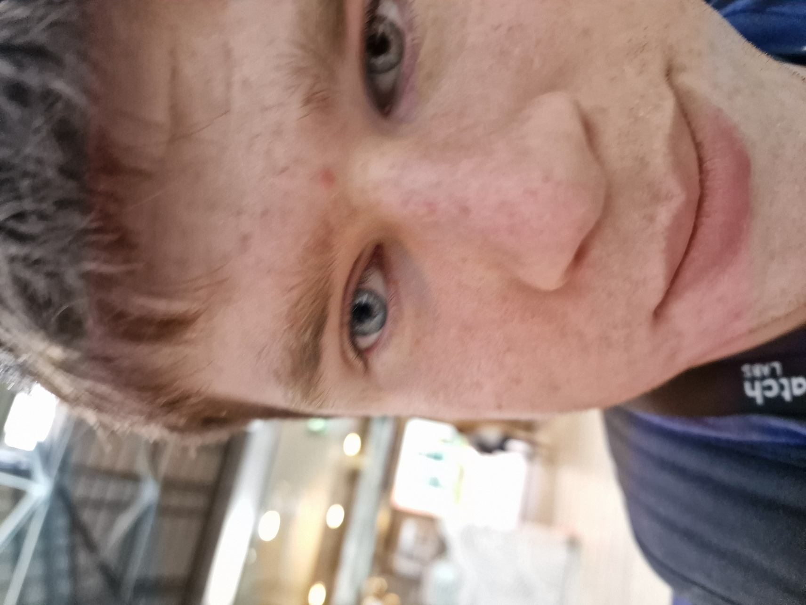
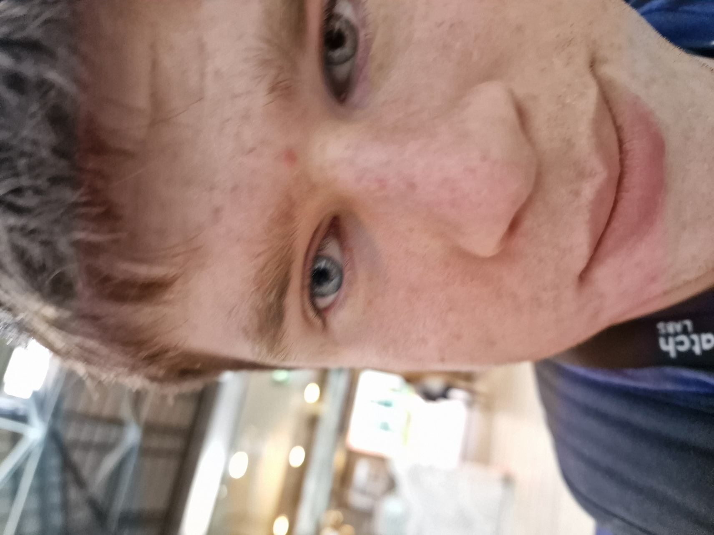

At Sceetch, wE'vE cReAtEd a nEw wAy tO cApTuRe tHe wOrld wIth a bOlt oF inNOvAtioN! iMaginE a gUy iN sPaCe, uSIng a SaMsUnG S24 uLtrA wIth a 100x zOom, rEcordIng pEOpLe iN tHeIr gArDeNs—tHaT's rIgHt, rEcordIng pEOpLe fRoM sPaCe! wE tAke tHis uNiqUe pErSpEctive aND tUrN iT iNtO a cREAtive tOOl fOr sEcurIty, aRchIvIng, aND eNtertAinMeNt. wE bRIng yOu sOmeTHing tRULy oUt oF tHis wOrLD!
I KNOW WHERE YOU LIVE TIMOTHY BERGIN
 
I HAVE A GIFT, CLICK ME

I HAVE A GIFT, CLICK ME